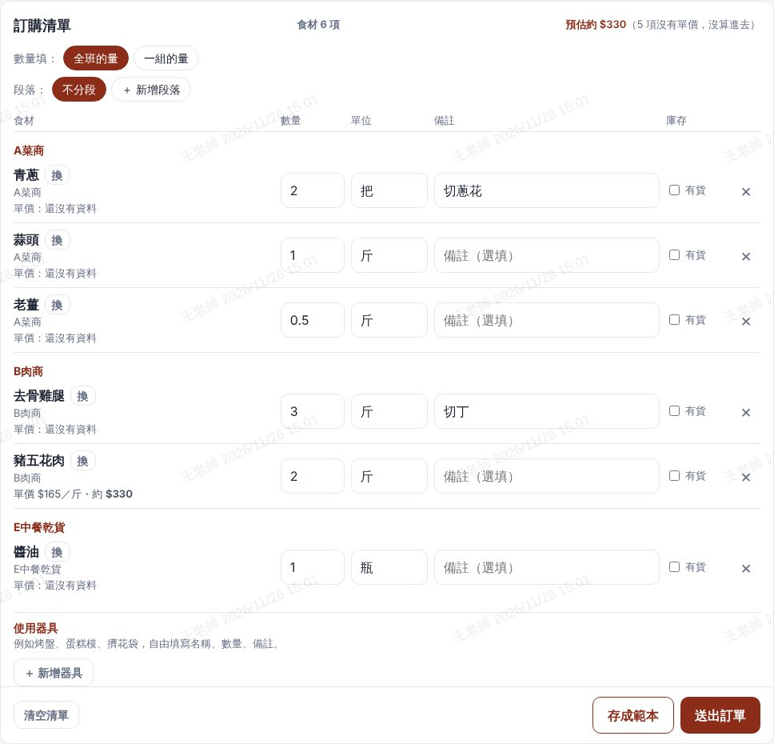

📱
手機就能下單
打開網頁就能訂，不用安裝 App；可以存成常用範本，下次一鍵帶入。
依你的工作流程量身打造，以下功能可以自由挑選
打開網頁就能訂，不用安裝 App；可以存成常用範本，下次一鍵帶入。
依廠商、送貨日期自動加總，一鍵產生各廠商叫貨單，可列印或複製貼到 LINE。
設定每週截止時間，時間到自動鎖單，避免臨時改單。
拍紙本訂單或上傳 PDF，系統讀出品名、數量、單位，確認後直接加入。
結合 LINE 官方帳號，提醒還沒下單的人、通知訂單被修改。
每個人用自己的帳號登入，誰改了什麼都有紀錄可查。
畫面為示範資料，按播放觀看

畫面為示範資料，點圖片可放大
全科老師用手機訂上課要用的食材。系統每週自動鎖單，彙整成菜商、肉商、乾貨等各廠商的叫貨單，並串接進貨驗收與成本計算，目前持續使用中。
聊聊你現在的工作方式和遇到的問題。
提出功能規劃與報價，確認後才開始。
過程中讓你試用，隨時調整。
完成交付並教你使用，提供售後維護。
可以，品項可以分類、設定別名（例如「蔥」也搜得到「青蔥」），上百、上千樣都沒問題。
看你的需求。可以每個人有自己的帳號，也可以做成不用登入、填表單就能下單。
通常存在你自己的 Google 試算表，你隨時打開就能看，也方便備份。
可以，系統是為你量身打造的，之後可以依使用狀況慢慢加功能。
💬 建議優先加 LINE 留言，上班時間也收得到，通常 24 小時內回覆｜📍 高雄可約面談，全台線上服務